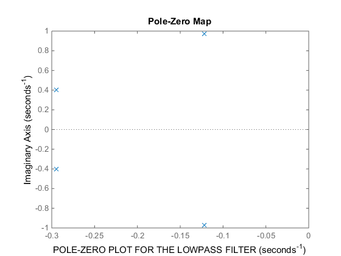
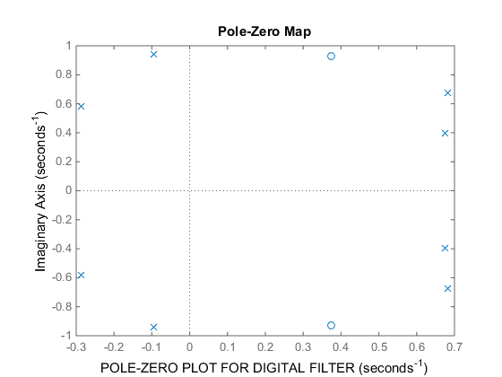
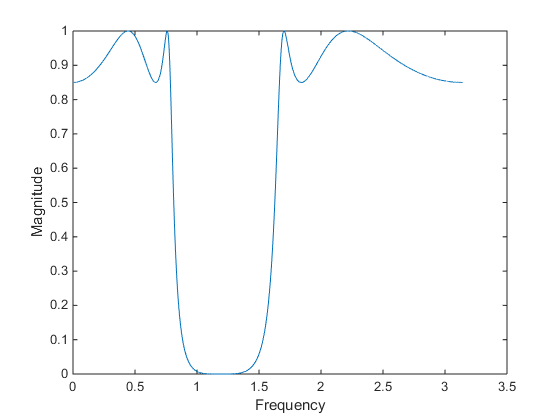

disp('CHEBYSCHEV BANDSTOP IIR FILTER :');
syms s;
samp_freq=50;
m=53;
q_m=floor(0.1*m);
r_m=m-(10*q_m);
disp('1) UNNORMALISED DISCRETE TIME FILTER SPECIFICATIONS');
S_L=4+(0.9*q_m)+(2*r_m)
S_H=S_L+10
P_L=S_L-2
P_H=S_H+2
disp('PASSBAND----->RIPPLES');
disp('2) NORMALISED DIGITAL FILTER SPECIFICATIONS');
nS_L=(S_L/samp_freq)*pi
nS_H=(S_H/samp_freq)*pi
nP_L=(P_L/samp_freq)*pi
nP_H=(P_H/samp_freq)*pi
disp('3) ANALOG FILTER SPECIFICATIONS AFTER BILINEAR TRANSFORMATION');
omega_s_1=tan(nS_L/2)
omega_s_2=tan(nS_H/2)
omega_p_1=tan(nP_L/2)
omega_p_2=tan(nP_H/2)
disp('4) FREQUENCY TRANSFORMATION---->(band*s)/(s^2)+(omega_o^2))');
omega_o=sqrt(omega_p_1*omega_p_2)
band=omega_p_2-omega_p_1
disp('5) FREQUENCY TRANSFORMED LOWPASS ANALOG FILTER SPECIFICATIONS');
omega_p_l_t=((band*omega_p_1)/((omega_p_1)^2 - (omega_o)^2))
omega_p_h_t=((band*omega_p_2)/((omega_p_2)^2 - (omega_o)^2))
omega_s_l_t=abs((band*omega_s_1)/((omega_s_1)^2 - (omega_o)^2));
omega_s_h_t=abs((band*omega_s_2)/((omega_s_2)^2 - (omega_o)^2));
if omega_s_l_t>omega_s_h_t
omega_low_s=omega_s_h_t
else
omega_low_s=omega_s_l_t
end
d_2=(1/(0.15*0.15))-1;
d_1=(1/(0.85*0.85))-1;
epsilon=sqrt(d_1);
N=ceil(acosh(sqrt(d_2)/epsilon)/acosh(omega_low_s/omega_p_h_t));
poles=[];
for k=4:7
a_k=(((2*k)+1)*pi)/8;
b_k=0.25*(asinh(1/epsilon));
h_k=a_k+(1j*b_k);
s_k=1j*cos(h_k);
poles=[poles s_k];
end
Zeros=[];
K=1/(epsilon*(2^(N-1)));
[num,den]=zp2tf(Zeros,poles,K);
disp('6) LOWPASS FILTER TRANSFER FUNCTION');
H=tf(num,den)
disp('POLES OF THE LOWPASS FILTER TRANSFER FUNCTION');
poles
figure
pzmap(num,den)
xlabel('POLE-ZERO PLOT FOR THE LOWPASS FILTER');
g=(band*s)/((s^2)+(omega_o)^2);
disp('7) BANDSTOP FILTER TRANSFER FUNCTION');
band_stop=K/poly2sym(den,g)
[band_num,band_den]=numden(band_stop);
band_num1=sym2poly(band_num);
band_den1=sym2poly(band_den);
syms z;
f=(1-((z)^-1))/(1+((z)^-1));
disp('8) DISCRETE TIME FILTER TRANSFER FUNCTION');
z_tf=(poly2sym(band_num1,f))/(poly2sym(band_den1,f))
[z_tf_num,z_tf_den]=numden(z_tf);
z_tf_num1=sym2poly(z_tf_num);
z_tf_den1=sym2poly(z_tf_den);
figure
pzmap(z_tf_num1,z_tf_den1)
xlabel('POLE-ZERO PLOT FOR DIGITAL FILTER');
[h,w] = freqz(z_tf_num1,z_tf_den1,10000);
figure
plot(w,(abs(h)))
xlabel('Frequency')
ylabel('Magnitude')
CHEBYSCHEV BANDSTOP IIR FILTER :
1) UNNORMALISED DISCRETE TIME FILTER SPECIFICATIONS
S_L =
14.5000
S_H =
24.5000
P_L =
12.5000
P_H =
26.5000
PASSBAND----->RIPPLES
2) NORMALISED DIGITAL FILTER SPECIFICATIONS
nS_L =
0.9111
nS_H =
1.5394
nP_L =
0.7854
nP_H =
1.6650
3) ANALOG FILTER SPECIFICATIONS AFTER BILINEAR TRANSFORMATION
omega_s_1 =
0.4899
omega_s_2 =
0.9691
omega_p_1 =
0.4142
omega_p_2 =
1.0990
4) FREQUENCY TRANSFORMATION---->(band*s)/(s^2)+(omega_o^2))
omega_o =
0.6747
band =
0.6848
5) FREQUENCY TRANSFORMED LOWPASS ANALOG FILTER SPECIFICATIONS
omega_p_l_t =
-1
omega_p_h_t =
1.0000
omega_low_s =
1.3714
6) LOWPASS FILTER TRANSFER FUNCTION
H =
0.2017
------------------------------------------------
s^4 + 0.8342 s^3 + 1.348 s^2 + 0.6243 s + 0.2373
Continuous-time transfer function.
POLES OF THE LOWPASS FILTER TRANSFER FUNCTION
poles =
-0.1222 - 0.9698i -0.2949 - 0.4017i -0.2949 + 0.4017i -0.1222 + 0.9698i
7) BANDSTOP FILTER TRANSFER FUNCTION
band_stop =
(17*111^(1/2))/(888*((5*111^(1/2))/222 + (1083774933385483360698399339587*s)/(2535301200456458802993406410752*(s^2 + 8200420117556983/18014398509481984)) + (115469468788769191954140527968193949399024816097*s^2)/(182687704666362864775460604089535377456991567872*(s^2 + 8200420117556983/18014398509481984)^2) + (1763011260289555884361478848367847213614689577346204407360399547*s^3)/(6582018229284824168619876730229402019930943462534319453394436096*(s^2 + 8200420117556983/18014398509481984)^3) + (1447249073377590971020423794298552862686299333956846122220043121*s^4)/(6582018229284824168619876730229402019930943462534319453394436096*(s^2 + 8200420117556983/18014398509481984)^4)))
8) DISCRETE TIME FILTER TRANSFER FUNCTION
z_tf =
((1001632185587009270498559768637015867638529519007443325687135858512502093227491328*(1/z - 1)^2)/(1/z + 1)^2 + (3300526270438805475945563265130335828222908410285863900046269239365359027296927744*(1/z - 1)^4)/(1/z + 1)^4 + (4833654428623103611948763506853412741668151282070570649302967013793911484681551872*(1/z - 1)^6)/(1/z + 1)^6 + (2654601102323766045377554654048294248143111334065326166179228981574263342953922560*(1/z - 1)^8)/(1/z + 1)^8 + 113989439069487884209689837644821910574099579516880988479036166823940936293154816)/((2902212521101306571907993540028640943443160991216769768926235914222923381427142656*(1/z - 1)^2)/(1/z + 1)^2 - (530713793086491041062664825887751672337749873673928678263673975162057733401739264*(1/z - 1))/(1/z + 1) - (5102336027443412176631350728475677486112673307482683571156061823354240821549334528*(1/z - 1)^3)/(1/z + 1)^3 + (14350552289661452817613061972836364539334305826326669470158288607296136874473553920*(1/z - 1)^4)/(1/z + 1)^4 - (11208634827240498540340592131393339880509612810936334195160296912858997279216893952*(1/z - 1)^5)/(1/z + 1)^5 + (14005432939642842345351397299512299467841217183304191128849228349180392190536318976*(1/z - 1)^6)/(1/z + 1)^6 - (5626150758405095629241722214544803814162141107977626421435090762237452261487804416*(1/z - 1)^7)/(1/z + 1)^7 + (3123060120380901229855946651821522644874248628312148430799092919499133344651673600*(1/z - 1)^8)/(1/z + 1)^8 + 134105222434691609897465985130875183395759325842724871346790419695969703701774336)
  